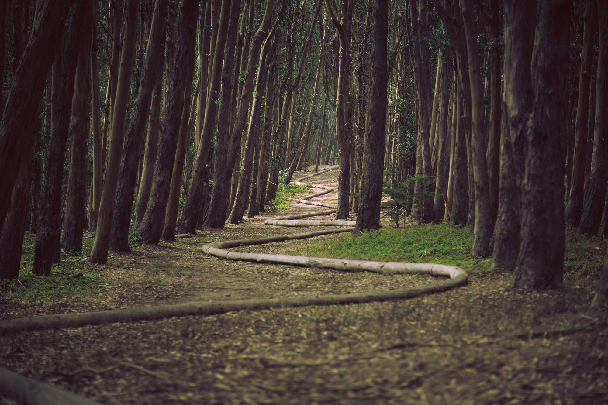
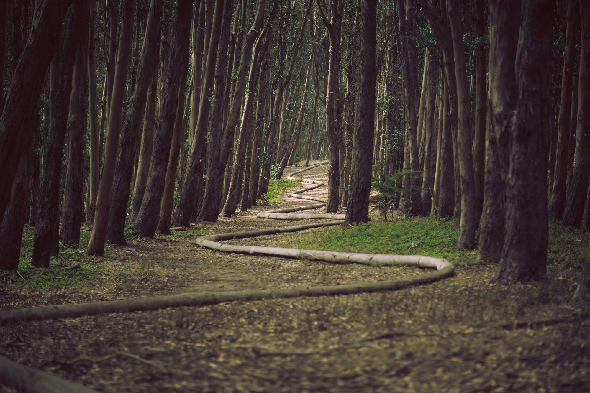

ECOTOURISM
The soul benefits from travel. It broadens our minds, as well as our hearts. It also assists us in realizing life's most important goal: to respect and love everyone around us and to improve the planet for humans and animals alike. However, we leave an imprint every time we pack our belongings and embark on a new adventure. The emissions from each mode of transportation used, as well as additional resources obtained to assist us have a good time, are included in this footprint.
So, how can we minimize our environmental impact while we travel? The main issue is mass tourism, because many operators do not prioritize environmental protection. Ecotourism is a viable alternative to mass tourism and a fantastic opportunity to travel off the beaten road while remaining environmentally conscious.
About us
Ecotourism is the concept of combining the excitement of travel with a thoughtful commitment to support and preserve the areas visited. It's all about preserving local traditions and reducing the negative effects of tourists. To deliver a low-impact travel experience, ecotourism combines sustainable tourism and environmental conservation.
Ecotourism's major purpose is to raise public awareness of environmental and social issues. An eco-tour, conservation project, or volunteering vacation is designed to educate tourists about the social problems in a particular tourism region. Poverty is one of these problems that is often disguised from tourists. Or the disappearance of animals as a result of commercial development and human effect.
The Principles of Ecotourism
-
Reduce the physical, social, behavioral, and psychological consequences.
-
Develop environmental and cultural awareness, as well as mutual respect.
-
Visitors and hosts should have a great experience.
-
Produce immediate monetary advantages for conservation.
-
Produce financial benefits for both local residents and private organizations.
-
Provide guests with unforgettable interpretive experiences that assist them become more aware of the political, environmental, and social climates of the host countries.
-
Low-impact facilities should be designed, built, and operated.
-
Recognize the Indigenous Peoples' rights and spiritual beliefs in your community, and engage with them to build empowerment.
Testimonials
Ecotourism should be of interest to everybody who enjoys traveling. It guarantees the safety of the places you visit and the people who live there. It safeguards a destination's cultural history as well as its natural surroundings. Local communities benefit from ecotourism because it respects their land, creates new jobs, and raises funds for environmental conservation and preservation. The places we love to visit will vanish if we continue to subsidize mass tourism. Tourism is responsible for 8% of all worldwide greenhouse gas emissions. Sustainable travel is a simple method to slow climate change while also supporting the well-being of local residents and communities. It's a simple way to repay the earth that has given us so much.
Ecotourism provides a fantastic opportunity to protect the country's natural resources and save irreplaceable species. It's also a vital tool for wildlife monitoring, education, socioeconomic development, and law enforcement.
Contact
3021 NE 50th
Oklahoma City, Ok 73121
Toll Free:
800-283-3558
506-427-8688